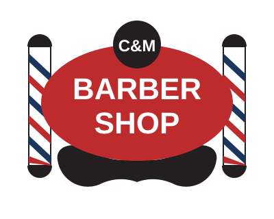

Owner GuideEverything you need to put your new site online, keep it running, and fix it if it ever breaks. Written for shop owners — no tech background required.
★ Bookmark this page ★Hi! Your website is ready. This page will walk you through three things:
Take your time. Have coffee nearby. The checkboxes on this page remember your progress, so you can close the tab and come back later.
Your web address, candmbarbershop.net, is registered with a company that charges you once a year. Before anything else, you need to know which company. That company is called your registrar.
candmbarbershop.net or the phrase domain renewal.If you can't find the email after 15 minutes of looking, text a tech-savvy friend or family member and ask them to help you locate it. This is the #1 step where people get stuck. Get it right before moving on.
If your current website is the default Google Sites template, the custom-domain mapping in Google Sites needs to be removed before the new site can go live. If you choose "Pay a Pro" in Step 2, they'll handle this for you. If you go DIY, Cloudflare will walk you through it.
Two honest choices. Neither is wrong. Pick whichever sounds least stressful.
You hand over the files, someone else does the clicking. You barely touch a computer.
🟡 DIYFree, no ongoing fees, ~30 minutes of following clear steps.
Can you pay bills online, check email, and follow a numbered list without panicking? DIY is fine. Does any of that sound like a lot of work? Pay a pro. Your time is worth $50.
Post a small job on Fiverr or Upwork. Anyone qualified can do this in under an hour.
When they're done, skip ahead to Step 5: Phone-test the live site. You're basically finished.
You'll use Cloudflare Pages. It's free, has no traffic limits, and is made by Cloudflare — a large, reliable company.
cm-barber-shop. Click Create project.cm-barber-shop.pages.dev. Copy that address and text it to yourself — you'll want it handy.That .pages.dev address works right now on any phone or computer. Text it to a friend and make sure everything looks good before you point your real web address at it.
DIY only — if you paid a pro, they already did this.
Right now your site lives at a free .pages.dev address. This step points candmbarbershop.net at it.
candmbarbershop.net → Continue.www.candmbarbershop.net.For the first hour or so, your browser might say "not secure" or show a certificate warning. That's normal — the padlock takes a little time to appear. Wait 30 minutes and check again. It always arrives.
Propagation (the fancy word for "the internet learning your new address") can take up to an hour. If it's not working after 2 hours, clear your browser cache or try on a different phone. Still stuck? Go to Step 8.
Open the site on your phone (not a computer — your customers are on phones) and check each of these. If any one fails, note it and text Tyler.
Your site is officially live and working. Celebrate. Tell Tyler. Post the link on Facebook. You did it.
Want to know how many people visit your site each week? Cloudflare gives you a free, private analytics dashboard. No cookies, no pop-up banners, no selling data.
candmbarbershop.net.index.html in VS Code (see Step 7). Press Ctrl+F (Windows) or ⌘+F (Mac) and search for REPLACE_WITH_TOKEN. Replace it with the token. Save.The website works fine either way. Analytics just let you see traffic counts and which pages people visit. Until you paste the token, the code is harmless and does nothing.
Download VS Code first: code.visualstudio.com. It's free, made by Microsoft, and doesn't corrupt files.
Do NOT use TextEdit (Mac) or regular Notepad (Windows). They secretly change the file format and will break the website. This is the #1 cause of broken small-business sites.
On Windows, Notepad++ is also safe and free.
After any edit, you have to re-upload the whole folder to Cloudflare Pages (drag-and-drop, same as Step 3). Cloudflare keeps the old version until the new upload finishes, so you can't break the live site mid-upload.
index.html in VS Code.tel: link, and the sms: link. Usually 3 places per stylist.Feels risky? Text Tyler a screenshot of the old + new number. 10-minute fix for someone who knows HTML.
index.html, search for Shop Hours and update the visible times.HOURS table near the top of script.js — this is what powers the live "Open now" dot.If you only update index.html and forget script.js, the "Open now" dot will be wrong. When in doubt, text Tyler.
Honestly: pay a pro $20 on Fiverr or text Tyler a photo of the business card. This is the one edit where the copy-paste is finicky enough that hiring help saves frustration.
If you're determined to do it yourself: find an existing stylist's card block in index.html (search for a name you know), copy the whole <article>...</article> block, paste it next to the original, and change the name, role, initials, and phone number. Save. Re-upload.
index.html, add: <img src="your-photo.jpg" alt="Describe the photo in words"> wherever you want it to appear.Top-priority photos to eventually add (per your brand directives):
| File | What it does | Touch it if… |
|---|---|---|
index.html | All the words and page structure | Text, hours, staff, address |
script.js | The "Open now" live clock | Your hours change |
styles.css | Colors, fonts, main layout | Leave alone unless brave |
components.css | Section-level styling | Leave alone unless brave |
cm-logo.svg | Your C&M logo | Only if the logo itself changes |
fonts/ | Website typefaces (Oswald + Open Sans) | Never touch this folder. |
_headers | Security settings | Never delete this file. |
Take a breath. Your files are backed up in more than one place. The live site can always be restored.
The Cloudflare Pages dashboard keeps every version you've ever uploaded. Go to your project → Deployments tab → find the last known good version → click the three-dot menu → Rollback to this deployment. You're back to the old version in 30 seconds.
Cloudflare renews certificates automatically every 90 days. If you ever see an actual expired warning, it almost always means the custom domain setup from Step 4 got disconnected. Remove the custom domain in the Cloudflare Pages dashboard and re-add it — this triggers a fresh certificate within 15 minutes.
Log into your registrar (Step 1) and renew. If you're within 30 days of expiry, a regular renewal works. After 30 days, there's a redemption fee (~$80) and you have to act fast before it's released to the public.
Prevention: turn on auto-renew at your registrar. This is the single most important "forget it" step.
Total time: ~30 minutes. No files are lost.
cm-website-backup with today's dateWrite them on paper. Put the paper in a locked filing cabinet at the shop. Only people you trust should know where. This is more secure than almost any digital option for a business your size.
candmbarbershop.net — registered at your registrar (Step 1)_headers.